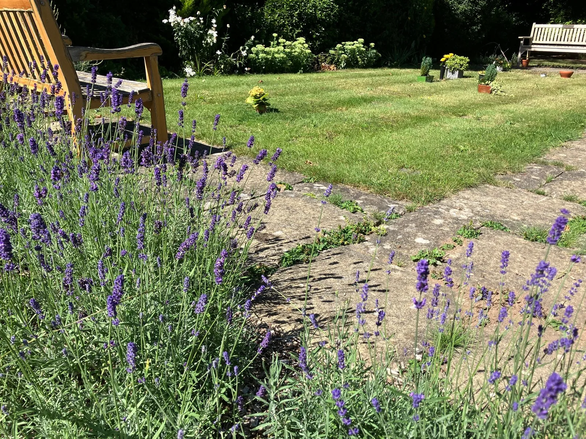

OUR COMMUNITY
Pastoral Care
Sharing God’s love through care, friendship and practical support.
Here in the Parish of Mickleham, we encourage each other to extend pastoral care by everyone, to everyone; it is not just the role of the leader to shepherd the flock, for all of us have a part to play. We all should seek to reach out to one another in Christian love.
Rooted in Christian love
Love one another
Our care for each other is rooted in Jesus’ call to love.
Opening the Bible reading…
Scripture provided by API.Bible · BiblicaHere for one another
Care in ordinary moments
One of the benefits of the church community here is that people know one another, and so look out for others, noticing when someone hasn’t been around for a while or hearing news about someone, and then responding, both practically and prayerfully.
Friendship and belonging
Ways to meet and belong
These activities come from the parish’s legacy Pastoral page. Schedules and venues below describe those arrangements and have not been confirmed as current. Please check with the parish before making plans.
Soup Lunches
Food, friendship and good company during Lent and Autumn.
More detailsBreakfasts Together
Monthly Women’s and Men’s breakfasts for friendship and conversation.
More detailsAfternoon Tea
Tea, conversation and friendship in local homes.
More detailsCoffee & Cake
A welcoming monthly gathering at the Chapel in Westhumble.
More detailsFriendship and belonging
Soup Lunches
Food, friendship and good company during Lent and Autumn.
From the legacy parish page — please confirm current dates, venue and arrangements with the parish.
When
During Lent and in the Autumn.
Where
The Village Hall.
What to expect
Bread, home-made soups, cheese and great company offer a wonderful opportunity to meet new friends and deepen relationships with those we already know, while enjoying a good meal together.
Transport can be arranged for those who need it. There is no charge; donations are welcome, with proceeds shared between charities nominated by the Church Community Group. Please confirm current transport and donation arrangements with the parish.
More information
The parish can help with current details and put you in touch with the right person.
Contact the parishCheck the CalendarFriendship and belonging
Breakfasts Together
Monthly Women’s and Men’s breakfasts for friendship and conversation.
From the legacy parish page — please confirm current dates, venue and arrangements with the parish.
When
Women’s Breakfast: third Saturday of each month. Men’s Breakfast: fourth Saturday of each month. Both were listed at 9.00am.
Where
The Stepping Stones pub in Westhumble.
What to expect
The breakfasts provide opportunities for all members of the local community to get together for an enjoyable start to the day, with excellent company and conversation.
More information
The parish can help with current details and put you in touch with the right person.
Contact the parishCheck the CalendarFriendship and belonging
Afternoon Tea
Tea, conversation and friendship in local homes.
From the legacy parish page — please confirm current dates, venue and arrangements with the parish.
When
Third Monday of each month, described as T@3.
Where
Local homes; please ask the parish about current hosting arrangements.
What to expect
Home-made refreshments and a selection of teas and coffees accompany a good get-together. It is a great time to get to know people we haven’t met before, as well as renew existing friendships.
More information
The parish can help with current details and put you in touch with the right person.
Contact the parishCheck the CalendarFriendship and belonging
Coffee & Cake
A welcoming monthly gathering at the Chapel in Westhumble.
From the legacy parish page — please confirm current dates, venue and arrangements with the parish.
When
First Saturday of each month, from 10.00am.
Where
The Chapel in Westhumble.
What to expect
The legacy parish page describes Coffee and Cake at the Chapel as a popular opportunity to meet. Please contact the parish to confirm the next gathering and current arrangements.
More information
The parish can help with current details and put you in touch with the right person.
Contact the parishCheck the CalendarWhen we reach out in these ways, and countless others, we demonstrate love, compassion and generosity towards others, reflecting what God has already shown to us. One of the primary messages of the Gospel is to serve and help other people, and we delight in seeking to embody these values in our lives and ministries.
We are here for you
Would you like someone to talk to?
If you would appreciate a conversation, prayer or pastoral support, we’re here to listen.
For safeguarding concerns, please use the separate Safeguarding page.